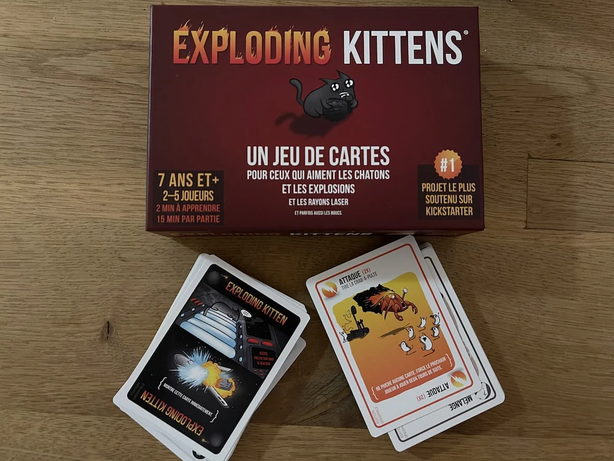
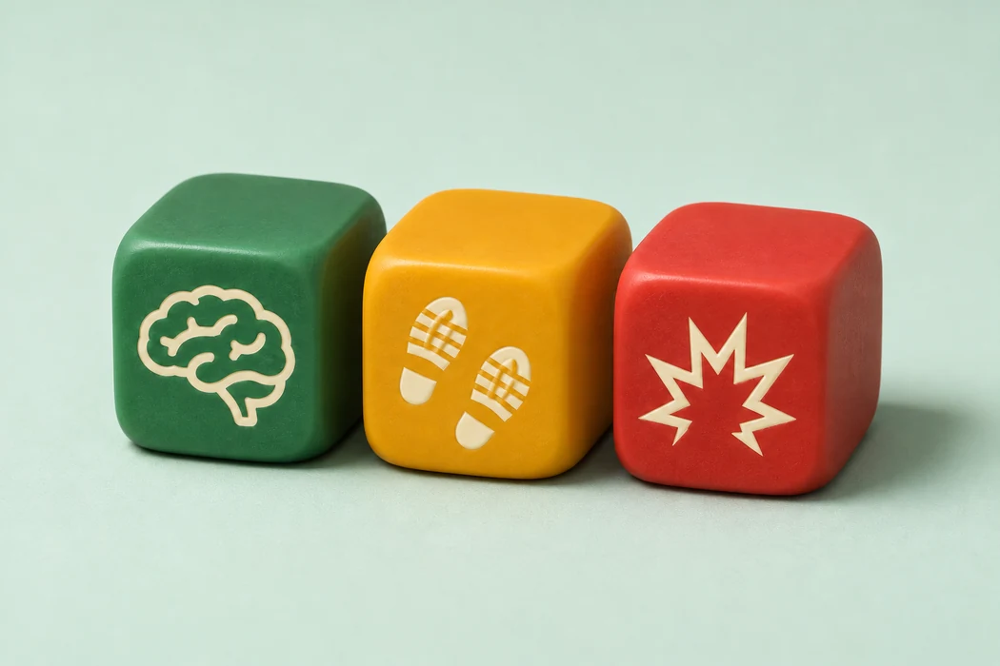
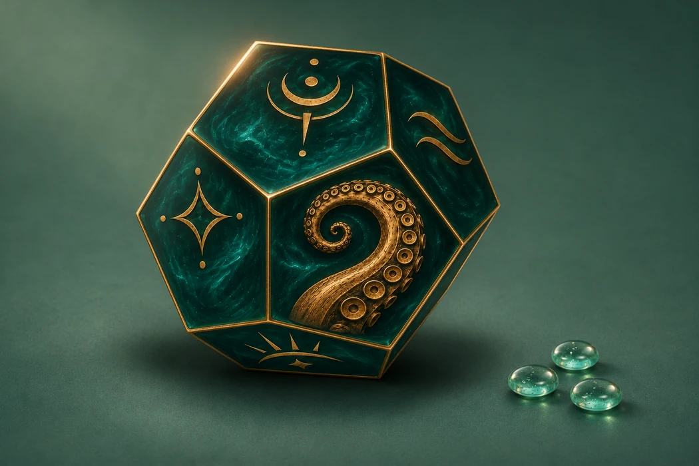

عکس ActuaLitté · CC BY-SA 2.0 · برش در نمایش
پروندهی ۰۰۱
Exploding Kittens
کشیدن یک کارت چطور به لحظهی اصلی تعلیق بازی تبدیل میشود؟
خواندن پروندهبرای یادگیری طراحی، ۳۶۵ بازی رومیزی را بررسی میکنیم تا بفهمیم قواعد و انتخابها چطور تجربهی بازی را شکل میدهند.

پروندهی ۰۰۱
کشیدن یک کارت چطور به لحظهی اصلی تعلیق بازی تبدیل میشود؟
خواندن پرونده

پروندهی ۰۰۳
وقتی جوابِ حمله به نفع مهاجم است، انتخابِ هدف چه اهمیتی پیدا میکند؟
خواندن پرونده